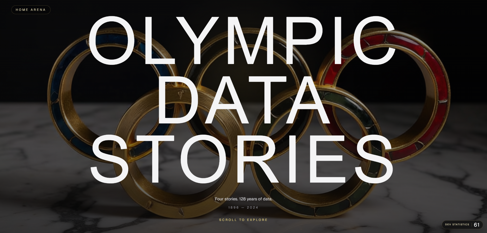

Memoria Ejecutiva · Mayo 2026

Aplicación web editorial de scrollytelling sobre historias olímpicas. La web combina visualización de datos, narrativa interactiva, animación y una home cinematográfica para articular una colección de piezas digitales con identidad propia pero lenguaje visual compartido.
Tecnologías utilizadas
El proyecto está construido con Next.js 16.2.4, React 19.2.4 y TypeScript 5.
Para el estilo se usa Tailwind CSS 4; para visualización y comportamiento interactivo se integran
D3 7.9 y GSAP 3.15. El control de calidad se apoya en ESLint 9 y la app
está preparada para despliegue en Vercel.
Frontend
Next.js App Router, React, TypeScript y componentes reutilizables en
src/components.
Estilo
Tailwind CSS 4, CSS local por historia cuando la pieza necesita identidad propia.
Visualización
D3 para ejes, grids y timelines; GSAP para transiciones, scroll reveals y motion editorial.
DevOps
Repositorio GitHub, despliegue Vercel y automatizaciones auxiliares en
scripts.
Estructura del proyecto
src/app
Rutas principales, layout global, home y páginas narrativas por historia.
src/components
Transiciones, shells reutilizables y soporte de navegación.
src/lib
Utilidades y definición compartida de secciones.
public/images
Activos visuales, retratos y vectores usados por las historias.
docs
Briefs creativos, copy, contexto de proyecto y documentación de apoyo.
scripts
Automatizaciones y utilidades de validación o preparación de assets.
Contenido publicado
/
Home editorial
Portada inmersiva que presenta las historias, gestiona la navegación entre piezas y actúa como eje visual de todo el proyecto.
/cold-war-in-gold
Cold War in Gold
Analiza cómo la pugna entre potencias se trasladó al medallero olímpico mediante gráficos animados, paneles contextuales y lectura dirigida por scroll.
/atlas-cuerpo-olimpico
Atlas Cuerpo Olímpico
Explora diferencias físicas entre disciplinas con siluetas, filtros, tooltips y paneles editoriales que convierten el dato en relato comparativo.
/cementerio-olimpico
Cementerio Olímpico
Reconstruye los deportes desaparecidos del programa olímpico con una cronología visual, filtros por era y tarjetas narrativas de lectura museográfica.
/10-olimpiadas-una-vida
10 Olimpiadas, una vida
Recorre carreras olímpicas extraordinariamente largas con filtros, líneas temporales horizontales, selección de atletas y capas biográficas.
Notas clave
Arquitectura
Separación por historia: cada pieza tiene su propia página, datos y lógica interactiva.
Escalabilidad
La estructura permite añadir nuevas historias sin romper la home ni el layout compartido.
Calidad
Scripts de lint y builds de Next garantizan verificación rápida antes de despliegue.
Repositorio
La documentación funcional y creativa vive junto al código para facilitar continuidad.